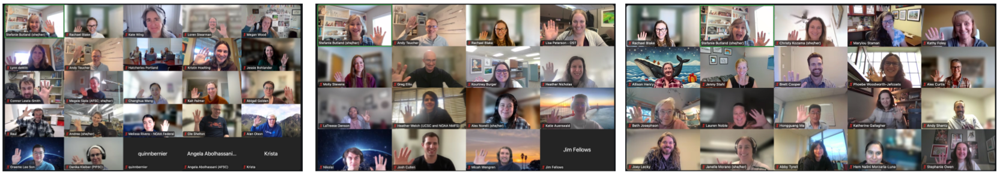
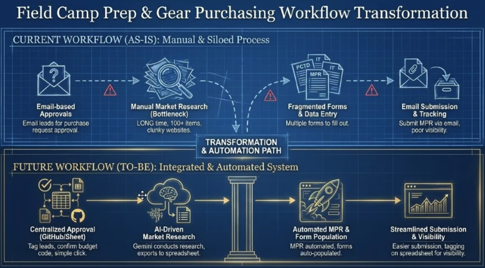
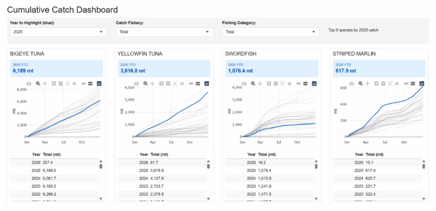
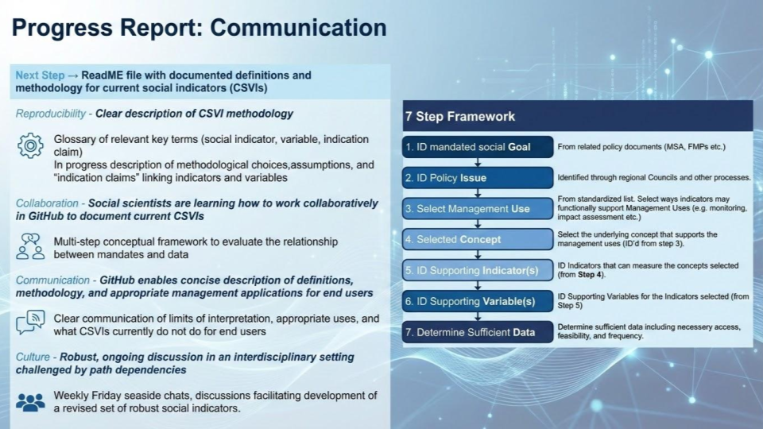

Cloud migration and data preservation progress across NOAA Fisheries - Fall 2025 Champions Recap
Julie Lowndes ![]()
Stefanie Butland
Andy Teucher
Eli Holmes
Jon Peake
Rachael Blake
Kate Wing
NOAA Fisheries Openscapes Mentors
100 NOAA Fisheries Champions!
We led 3 concurrent Openscapes Champions Cohorts for NOAA Fisheries this fall. These were cohorts 14 to 16 for NOAA Fisheries, involving over 600 staff and affiliates in total! Participants included teams and individuals from all 6 NOAA Fisheries Centers - Pacific Islands, Southwest, Southeast, Northwest, Northeast, Alaska - along with the Office of the Chief Information Officer (OCIO), Office of Science and Technology (OST), National Ocean Service (NOS), Integrated Ocean Observing System (IOOS), Southeast Regional Office (SERO), West Coast Region (WCR), Pacific Islands Regional Office (PIRO), and Office of Protected Resources (OPR). This post is a summary and celebration of some of their work.
Quicklinks:
- Cohort webpage
- Browse stories about the NOAA Fisheries Openscapes framework
Cross-posted at openscapes.org/blog, nmfs-openscapes.github.io/blog.
Cloud Migration and Data Preservation progress happens with collaboration
As NOAA is migrating data to the cloud, this means many people are needing to change their workflows. What Openscapes has learned over the years is that a big part of changing workflows is helping people make connections so they can help each other. Champions Cohorts connect people within and across their home centers as they learn new skills for data workflows that are immediately relevant for their work. And this enables change that wasn’t possible before.
One exciting example of something that wasn’t possible before is the NOAA Fisheries Cloud Computing Setup documentation that NOAA Fisheries Openscapes Mentor Molly Stevens (SEFSC) started in preparation for the Champions Cohort (following six months of collaborative testing with other Mentors). When Alex Norelli learned about it while participating in the Champions Cohort, she found this setup resource valuable for her own work. She began collaborating with Molly to test it, achieving something she could not do before the Cohort started:
“I benchmarked different cloud environments and explored data management solutions like Google Cloud Buckets, which sparked so many seaside chats about best practices in migrating current workflows to the cloud.” - Alex Norelli, SEFSC
Ultimately, Alex co-led a Google Workstations Clinic during the last weeks of the Cohort with Molly and Jon Peake (NMFS Open Science), which benefitted additional participants and helped further develop the documentation. This example embodies how change happens within organizations: people are able to do more together than they can alone. And it starts with the practice of creating something useful for others, sharing it early, and iterating together.
Over two months in fall 2025, 100 NOAA Fisheries staff tackled projects to improve or restructure data workflows through the Openscapes Program. They made substantial progress on complex workflow goals, such as:
Benchmarking cloud data storage solutions;
Getting feedback on data modernization policy and needs;
Developing workflows exclusively in the cloud to align with NOAA Fisheries modernization goals;
Creating dashboards to communicate data-heavy reports with programmatic code and version control;
Contributing to coordinated science program onboarding and operating procedures that are harmonized across NOAA Fisheries;
Exploring how AI can enhance their workflows.
The Openscapes team worked with NOAA Fisheries Openscapes Mentors – staff and affiliates from across centers and offices – to invite colleagues to participate, organize and teach lessons and skill-building workshops, lead small group reflection time, and facilitate coworking sessions. During coworking sessions, participants could brainstorm and make progress on what mattered to them with others working on similar tasks.

Fall 2025 Cohorts - what was new
Adapting our standard Champions Cohorts, we made more space for NOAA Fisheries Openscapes Mentors and NOAA leadership to share new tools and policies for cloud migration.
Michael Liddel (OST - Assistant Chief Data Officer) and Heather Nicholas (Office of the CIO) hosted Seaside Chats on Cloud migration and Data Optimization while participating as Champions and learning about science staff needs.
Eli Holmes (NMFS Open Science) developed and taught a new lesson on Cloud Strategies for Future Us (recording).
Molly Stevens (SEFSC), Alex Norelli (SEFSC new Champion), and Jon Peake (NMFS Open Science) documented the NOAA Fisheries Cloud Computing Setup and developed and hosted a Google Workstations Clinic.
Kathryn Doering (OST) presented on Infrastructure and support at NOAA Fisheries.
Erin Steiner (NWFSC/OST) launched and presented on the new GitHub server for confidential information now available across NOAA Fisheries.
We also partnered with Intertidal Agency’s Kate Wing and Rachael Blake to teach new lessons to address the theme of data preservation: Metadata - Documenting your Data and a Zenodo Clinic. These were built from an ESIP summer conference session “Archive your first or second dataset”. This is a powerful partnership; Intertidal is leading a Data Stewardship Cohort shortly (registration open!) and will reuse the Openscapes Champions structure and some of these lessons. The Zenodo Clinic replaced our regular GitHub Clinic. However, the GitHub Clinic is something people asked for, as it has been recognized by many as a friendly on-ramp to GitHub concepts and collaboration. We taught aspects of the GitHub Clinic in three coworking sessions with small groups that included both beginners and more experienced users.
What NOAA Fisheries staff accomplished: learning and shifting workflows
In the final cohort call, people are invited to share their work-in-progress using our Pathways tool for identifying how they work now along with their goals and progress.
We saw several themes popping up:
asking for help;
“slowing down to speed up”;
seeing what’s possible;
testing things together - like cloud infrastructure - checking in with each other during seaside chats, trying to make things work, comparing workflows;
sharing templates for workflows, like project management approaches for cyclical stock assessment reports.
We also saw that many more people participated as individuals rather than in teams this time including some who are collaborating with IT colleagues at several centers. This is why the experience of “learning all of the faces; these are people doing the same work I’m doing” and knowing who to ask for help is so valuable, while often underappreciated as an impact of cohort-based learning.
“The biggest benefit in this regard was meeting others across the organization faced with similar problems and using similar tools.”- Greg Ellis, NEFSC
“It already helps to realize that we are a much larger group with an ample common space to share and contribute ideas and different ways to tackle challenges and improve our workflows.”- Raul Ramirez, AFSC
Here are some examples from those presentations during our final call together.
Cloud examples
Management Strategy Evaluations (MSE) Cloud Workflow
Desiree Tommasi (SWFSC), Liz Brooks (NEFSC), and Alex Norelli (SEFSC) are stock assessment scientists from three different science centers who all work on Management Strategy Evaluations and were able to connect through Openscapes. MSE simulations deal with a LOT of data, and a single stock assessment run can take from 5 to 45 minutes, so cloud computing is critical to make this faster. Learning “the cloud” can be intimidating but having a space and peers to “interrogate the heck out of things” is a huge contribution to learning. Their Seaside Chats began with Alex sharing her process and together they learned from there.
Questions, philosophical discussions, and compiled notes led to an MSE Cloud Workflow with recommendations for prep, setup, and run and archive phases, and helped Alex contribute to the Google Cloud Workstation workshop (documentation; with Molly Stevens and Jon Peake. The team shared main issues and their current solutions in their pathway presentation (image below). For example, they learned that Google Cloud Workstations don’t have enough storage or power (cores) for their outputs. They had to divide their pipeline across multiple Workstations in order to do the work. They are having ongoing talks with their local IT staff and the Pilot Workstation team and are hopeful for a future “dream workstation” – that will be valuable for many people at NOAA Fisheries, not just them.
![Major milestones. Issue: Learning "the cloud" is intimidating and we're busy people, how do you even start using workstations? Solution: Alex walked us through her MSE process and the Openscapes program hosted a hands-on clinic to get people started. Issue: Google Cloud Workstations don't have enough storage for MSE simulation output. Solution: Mounting a Google Cloud Bucket makes the workstation space nearly infinite. Issue: Google Cloud Workstations don't have enough power/cores to increase the speed of a project. Clone workstations and divide the work across many workstations is a current workaround. Issue: Our ideal workstation would be larger than those provided in the pilot program. Solution: Ongoing discussions with IT about the workstation sizes and Google Cloud Buckets.](MSE-cloud-pathway-milestones-tommasi-brooks-norelli.png)
Exploring cloud workflows for species distribution modeling
Josh Cullen and Heather Welch work in the SWFSC species distribution modeling (SDM) group. While they each work on different projects, they had the mutual goal of exploring the cloud with their workflows, identifying improvements and snags, and helping others in their group with migrating their workflows to the cloud.
Josh works on daily forecasts of fishing conditions for target species and bycatch. He recognized that people can improve workflows for both ecological modeling and operational tools by “shifting to a cloud-based approach using the ’cloud native’ Zarr format to stream large datasets from any computer or Virtual Machines (VMs)”. Meanwhile, Heather compared the performance of VMs. VMs have machine types that vary by compute power and memory as a trade off with cost. Heather presented her work benchmarking the performance of VMs with CPUs vs GPUs.
Workflow transformation for procurement: field camp preparation and gear purchasing
Christy Kozama (PIFSC) focused her time during Openscapes Champions exploring how her procurement pipeline could be improved. Procurement (also known as how purchasing and buying stuff, say, computers or fishing gear, works within an organization) may not be what comes to mind when we think about data at NOAA Fisheries. But procurement data is indeed a part of the whole picture, and there is a process and many decisions and documentation that go into it. For example, “market research” (image: top, second to the left) comparing prices and vendors – as well as tracking and process and documentation – has the money been sent, has the item been received, does the scientist or original requester now have it? As part of NOAA Cloud migration, NOAA staff are also encouraged to be using AI more. With that in mind, Christy explored what her procurement pipeline could look like using AI-driven tooling (lower half of image below).

Data preservation
Making sure data is usable is part of data preservation. Brett Cooper’s (PIFSC) Shiny dashboard is an eye towards making data more accessible to a whole team, while preserving confidentiality. He transformed a manual, opaque catch reporting workflow into a reproducible, transparent dashboard that protects confidentiality while enabling real-time fishery monitoring for the Pacific Islands long-line fishery.

Project management
Several teams and individuals chose to focus on adopting open source tools like GitHub for project management. GitHub is a cloud tool that is integral to reproducible workflows and collaborative planning. It is highly used at NOAA Fisheries, being normalized in part through the past 13 Openscapes Champions cohorts and with equitable access across the agency due to the GitHub Governance Team and the NOAA Openscapes Mentors. Although in Fall 2025 we taught the Zenodo Clinic in place of our normal GitHub Clinic, we taught GitHub lessons during three different Coworking sessions. Here are two examples of how Champions learned and made progress using GitHub.
Alex Curtis and Jeff Moore (SWFSC) learned from and built on what past Champions and Mentors had learned and created. They are developing a GitHub project (with associated repos) for managing tasks related to the annual cycle of updating marine mammal stock assessment information and reports. Key goals are to adapt to the loss of critical institutional knowledge and capacity from 2025 retirements, to organize for near-term projects, and to continue to build out workflows for automated reporting. For example, annual compilation of human-caused mortality and serious injury requires obtaining information from many sources in different formats, as well as collaborating with other centers, so tracking, processing, and coordination are a challenge. Ultimately, they are interested in centralizing the communication and tracking of project progress, as opposed to using email to connect to people throughout the agency.
This work is a leapfrog story of Champions who become Mentors, openly sharing their work-in-progress GitHub Projects so that others can avoid starting from scratch. Alex’s first example to follow was from Shannon Rankin and Kourtney Burger (SWFSC, 2022 Champions) who had built a lab manual and a way to document knowledge. Following some small-group coworking to talk through skills, needs, and examples, Marylou Staman (PIFSC, 2024 Champion) and Megsie Siple (AFSC, 2021Champion) led a coworking session on open science tools for project management that 20 people participated in!
Another open project management pathway was presented by the Fisheries Monitoring and Analysis (FMA) Process Improvement Team (AFSC) including Gwynne Schnaittacher, Graeme Lee Son, Marlon Concepcion, and Raul Ramirez. Their work involves evaluating the components of an observer’s “life cycle” with the program to improve Fisheries Monitoring and Analysis (FMA) data collections and processes that would lead to better data quality and ultimately a better product for stakeholders. They come from an administrative perspective, keen to learn about open tools for project management. GitHub was intriguing to them. The majority had not used it but the team committed to learning and using GitHub to get comfortable. They made great progress through biweekly meetings to touch base and keep momentum, working with Mentor Josh London (AFSC) on this exploration.
Other topics
Cameron Speir’s Openscapes participation is part of a larger project in the NMFS Social science community: the Community Social Vulnerability Indicators (CSVI) reproducibility project. CSVI does two things: 1) Classifies communities by engagement and reliance on commercial and recreational fishing and 2) Characterizes social, demographic, and economic well-being of those communities. Cameron shared three progress reports on his Openscapes goals: reproducibility, communications, and data storage. He aims to build awareness so that even people who didn’t need to know about the code can still know about the decisions going into the CSVI indicators.

Megan Wood and Kait Palmer (PIFSC) collaborated on Makara database transition with an Openscapes mindset. They used GitHub Issues to leave breadcrumbs in a single thread instead of sending an email that would lead to 17 followups buried in emails.
The Hatchery Compliance team (WCR) of Alan Olson, Chante Davis, Krista Finlay, John Brady, James Archibald, Kellen Parrish produces “biological opinions” with a compliance letter as the endpoint of their workflow. Determining if a scientist is in compliance is based on a long complex set of terms and conditions. They built a Gemini Gem (AI) to save scientists time by drastically narrowing down the areas the scientist likely needs to address further to be in compliance.
Jenny Stahl (PIFSC) documented where to find things when creating a SAFE document (Stock Assessments and Fishery Evaluation). She did this in a google doc noting where to find repositories, Quarto files, R code, and what the output is - html or pdf - and she recommended improvements like identifying where they have overlapping code.
Sidebar Seaside Chats led to Nikolai Klibansky spinning up a GitHub 101 to better implement GitHub use across all of the SEFSC.
Mentors impact – building from over 5 years of collaboration
After five years of working with NOAA Fisheries, we’re seeing Openscapes practices really become a movement. People are learning from each other (“now we see that our team leads were ‘Openscapesing’ us all along with their open process!”). Champions are becoming Mentors and turning around to share with new Champions (like the project management examples above) and inside their divisions as they see needs, and mentoring through seaside chats, building, and sharing to address those needs. We’re seeing the Openscapes approach reach beyond the early adopter innovators to the early majority (more on this under Reflections, below).
The impacts we see now build on work that develops over years. The Google Workstations Clinic that Molly Stevens, Alex Norelli, and Jon Peake delivered stemmed from a MentorActivities Issue on the topic from early 2025, and Molly ran with it. That first issue has turned into a huge and ongoing impact across NOAA Fisheries.
It shows up in other ways too. Loren Stearman (NWFSC) is focusing on psychological safety with the teams he works most closely with. He is working on how to help bring Openscapes principles beyond data workflow contexts. The human side and safe environments for communication is so critical to the longevity of the projects he works on and he is helping other Mentors across NOAA Fisheries prioritize and have language for these conversations.
Perseverance and envisioning what’s possible is another characteristic of NOAA Mentors. Erin Steiner (NWFSC) saw the need for a GitHub server for confidential data - losing a system her local team had relied on meant she could rebuild it for everyone! Erin developed a plan and proposal, and did not give up, spending time in an 8-month journey convincing people that there was both a need and a solution. She shared this as a Pathway for the 2025 fall Champions cohort. Erin says the hardest part was not quitting, even when she was told she was using GitHub wrong (she was not!). It is hard to know what was different between the 58th version of a pitch email and 59th, but it was that 59th email that gained traction to make it happen. Erin gave a shoutout to some IT infrastructure folks. And ultimately, she was successful (the beta version launched Feb 2nd!) because she was not doing this alone: she was able to reuse (“fork”) the approach Kathryn Doering (OST) took for GitHub Governance (seeing what’s possible), and had the encouragement of Kathryn and others along the way.
Reflections: Crossing the Chasm with Innovators and Early Majority
This year’s NOAA Fisheries Openscapes Champions program was different in two big ways that were happening simultaneously. We are reaching new audiences, having worked with NOAA Fisheries for so many years, and led 16 Champions Cohorts with them. Thinking about the diffusion of innovation theory; for the past years we have been investing in the “early adopter” community by supporting the NOAA Fisheries Mentors and Champions cohorts. In 2025, we focused on sharing the story of how we had “crossed the chasm” and would now be working more with the”early majority”. The Fall 2025 Champions Cohort was the next part of the story: we had early majority folks as well as innovators who are developing new infrastructure and workflows for cloud computing.
What does this mean for how we engage and teach NOAA Fisheries Champions going forward? Will the spectrum of NOAA staff’s goals have broadened in a way that the support we give people will look different in the future? We’ve always designed Champions Cohorts to not assume prior knowledge of coding or GitHub or any specific dataset or type, and we’ve designed so that people with different expertise and deliverables, like supervisors and analysts and IT staff, can all learn together and take what they need back to their work. However, we need to think more about what Openscapes Champions looks like when the spirit of “data workflows” is not a unifier for all participants. While we will need to listen and innovate to meet these new needs, we will also remember to pause and reuse what has worked in the past: the value of welcome, art, show-not-tell, empathy, and community. And a constant reminder that we’re not alone, it’s not too late.
Citation
@online{lowndes2026,
author = {Lowndes, Julie and Butland, Stefanie and Teucher, Andy and
Holmes, Eli and Peake, Jon and Blake, Rachael and Wing, Kate and
Fisheries Openscapes Mentors, NOAA and NOAA Fisheries Champions!,
100},
title = {Cloud Migration and Data Preservation Progress Across {NOAA}
{Fisheries} - {Fall} 2025 {Champions} {Recap}},
date = {2026-02-26},
url = {https://openscapes.org/blog/2026-02-26-nmfs-champions-2025/},
langid = {en}
}